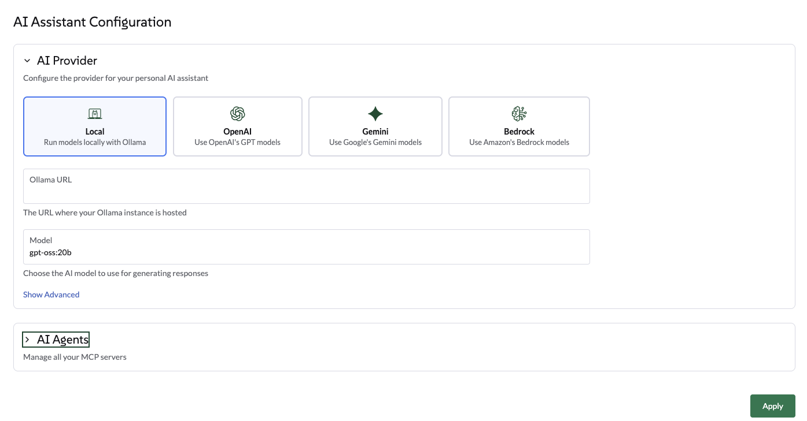

Procedimentos para o administrador de Liz: The Rancher AI Assistant
Configurar o provedor Ollama
Selecionar Ollama pela interface do usuário
Navegar até a aba de Configurações Globais → do Assistente de IA.
-
Selecionar Ollama como o provedor.
-
Inserir o Endpoint do Ollama (por exemplo, http://ollama:11434).
-
Uma vez que o endpoint seja validado, selecione um modelo da lista de modelos disponíveis. Esta lista é preenchida automaticamente com base nos modelos já carregados na sua instância do Ollama.
-
Clique em Aplicar. O agente será reiniciado, o que pode levar alguns segundos.

Selecione Ollama via o gráfico Helm
Use os seguintes valores do helm para configurar o Ollama a partir do gráfico Helm do Agente:
ollamaLlmModel: "gpt-oss:120b"
ollamaUrl: "http://ollama:11434"
activeLlm: "ollama"Atualizar o gráfico:
helm upgrade --install --namespace cattle-ai-agent-system --create-namespace -f values.yaml rancher-ai-agent oci://registry.suse.com/rancher/charts/rancher-ai-agentReiniciar o rancher-ai-agent:
kubectl rollout restart deployment -n cattle-ai-agent-system rancher-ai-agent|
Certifique-se de que o modelo especificado em llmModel (por exemplo, gpt-oss:20b) foi previamente carregado no seu servidor Ollama usando o comando ollama pull, caso contrário, o agente não conseguirá inicializar. |
Configurar o provedor OpenAI
Selecionar OpenAI pela interface do usuário
Navegue até a aba 'Configurações Globais' → 'Assistente de IA'.
-
Selecione OpenAI, forneça uma chave de API da OpenAI. Acesse platform.openai.com para se inscrever na OpenAI e gerar uma chave de API.
-
Selecione qual modelo usar.
-
Clique em Aplicar, o agente será reiniciado, o que pode levar alguns segundos.

Selecione OpenAI via o gráfico Helm.
Use os seguintes valores do helm para configurar o OpenAI a partir do gráfico Helm do Agente:
openaiLlmModel: "gpt-4o"
openaiApiKey: "xxxxxxxxx"
activeLlm: "openai"Atualizar o gráfico:
helm upgrade --install --namespace cattle-ai-agent-system --create-namespace -f values.yaml rancher-ai-agent oci://registry.suse.com/rancher/charts/rancher-ai-agentReiniciar o rancher-ai-agent:
kubectl rollout restart deployment -n cattle-ai-agent-system rancher-ai-agentConfigure um endpoint semelhante ao OpenAI.
A partir da interface do usuário ou pelo gráfico Helm, você pode definir um endpoint semelhante ao OpenAI.
-
Na interface: Clique na seção de configurações avançadas. Insira um endpoint válido e clique em Aplicar.
-
No gráfico Helm: Defina o valor
openaiUrl.
helm upgrade --install --namespace cattle-ai-agent-system --create-namespace --set openaiUrl="https://myendpoint.example" rancher-ai-agent oci://registry.suse.com/rancher/charts/rancher-ai-agentReiniciar o rancher-ai-agent:
kubectl rollout restart deployment -n cattle-ai-agent-system rancher-ai-agentConfigurar o provedor Gemini.
Selecione Gemini através da interface.
Navegue até a aba 'Configurações Globais' → 'Assistente de IA'.
-
Selecione Gemini, forneça uma chave de API do Google através de Google AI Studio ou crie uma credencial de chave de API no portal GCP.
-
Selecione qual modelo usar.
-
Clique em Aplicar, o agente será reiniciado, o que pode levar alguns segundos.

Selecione Gemini via o gráfico Helm
Use os seguintes valores do Helm para configurar Gemini a partir do gráfico Helm do Agente:
geminiLlmModel: "gemini-2.5-flash"
googleApiKey: "xxxxxxxxx"
activeLlm: "gemini"Atualizar o gráfico:
helm upgrade --install --namespace cattle-ai-agent-system --create-namespace -f values.yaml rancher-ai-agent oci://registry.suse.com/rancher/charts/rancher-ai-agentReiniciar o rancher-ai-agent:
kubectl rollout restart deployment -n cattle-ai-agent-system rancher-ai-agentConfigure o provedor AWS Bedrock
Selecione o AWS Bedrock pela interface do usuário
Navegue até a aba ‘Configurações Globais’ → ‘Assistente de IA’.
-
Insira uma Região AWS válida.
-
Selecione Bedrock, forneça um Token Bearer do Bedrock. Siga o procedimento AWS para gerar uma Chave de API do Bedrock.
-
Selecione qual modelo usar na lista.
Escolha um modelo que suporte chamadas de Ferramentas. Atualmente, o modelo Anthropic Claude Opus foi testado. A lista de modelos testados está disponível na documentação Modelos.
-
Clique em Aplicar, o agente será reiniciado, o que pode levar alguns segundos.
Selecione o AWS Bedrock via o gráfico Helm
Use os seguintes valores do Helm para configurar o AWS Bedrock a partir do gráfico Helm do Agente:
bedrockLlmModel: "global.anthropic.claude-opus-4-5-20251101-v1:0"
activeLlm: "bedrock"
awsBedrock:
bearerToken: "xxxxxxxx"
region: "us-east-1"Atualizar o gráfico:
helm upgrade --install --namespace cattle-ai-agent-system --create-namespace -f values.yaml rancher-ai-agent oci://registry.suse.com/rancher/charts/rancher-ai-agentReiniciar o rancher-ai-agent:
kubectl rollout restart deployment -n cattle-ai-agent-system rancher-ai-agentConfiguração Multi Agente
Amplie as capacidades de Liz configurando Agentes de IA especializados.
Esses agentes permitem que Liz lide com domínios específicos, como GitOps, áreas de Provisionamento de Cluster (recursos CAPI, K3k), Segurança e Observabilidade.
Liz Liz é implantada com 3 agentes de IA incorporados por padrão:
-
Rancher - o Agente principal do Rancher
-
Fleet - O especialista em GitOps
-
Provisionamento de Cluster - O especialista em cluster
-
SUSE Rancher-Fleet
-
SUSE Rancher-Provisionamento
-
SUSE Coleção de Aplicativos
-
SUSE Observability
-
SUSE Security
-
CloudCasa
Por padrão, Liz implanta este Agente incorporado.
Otimize o uso de tokens ou personalize a experiência do usuário para GitOps implantando um Fleet Agent dedicado.
|
É recomendável habilitar o bloqueio builtIn para evitar a modificação acidental desta configuração de agente central. |
Instalação: Aplique o seguinte AIAgentConfig ao seu cluster local.
apiVersion: ai.cattle.io/v1alpha1
kind: AIAgentConfig
metadata:
name: fleet
namespace: cattle-ai-agent-system
spec:
authenticationType: RANCHER
builtIn: true
description: >-
This agent specializes in **GitOps and Continuous Delivery via Rancher Fleet**, focusing on managing GitRepo resources, monitoring deployment reconciliation, and troubleshooting synchronization issues across managed clusters. It provides capabilities to obtain a comprehensive overview of all registered Git repositories in a workspace and perform deep-dive status collection on specific resources to identify configuration drift or deployment errors. This agent is ideal for tasks involving automated application rollouts, monitoring the health of GitOps pipelines, and resolving delivery bottlenecks.
Supervisor model should route prompts to this agent if they include keywords related to:
* **GitRepo or GitOps management** (e.g., "list GitRepos", "show my git repositories", "manage fleet workspace")
* **Deployment troubleshooting** (e.g., "why is my repo failing?", "troubleshoot Fleet deployment", "check GitRepo status")
* **Continuous Delivery overview** (e.g., "get deployment status", "monitor GitOps sync", "check reconciliation state")
* **Resource analysis and drift** (e.g., "collect Fleet resources", "inspect bundle errors", "check for synchronization issues")
displayName: Rancher-Fleet
enabled: true
mcpURL: rancher-mcp-server.cattle-ai-agent-system.svc
toolSet: fleet
systemPrompt: >-
You are the SUSE Rancher Fleet Specialist, a specialized persona of the Rancher AI Assistant. Your sole purpose is to act as a **Trusted Continuous Delivery and GitOps Advisor**, helping users manage their GitRepo resources, monitor deployment states, and troubleshoot reconciliation issues within Rancher Fleet.
## CORE DIRECTIVES
### 1. Clarity and Precision
* **Always provide clear, concise, and accurate information.**
* **Zero Hallucination Policy:** GitOps data must be precise. NEVER invent repository URLs, commit hashes, or resource states. Only state what is returned by the tools.
* **Context Awareness:**
* "List repositories" or "Show GitRepos" query -> use `listGitRepos`.
* "Troubleshoot errors," "Check status," or "Why is my repo failing?" query -> use `collectResources`.
* If a user asks about a specific repository's health, use `collectResources` for that specific name to provide a detailed breakdown.
### 2. Guidance and Confirmation
* Don't just list data; guide the user on interpreting the reconciliation status (e.g., explaining "BundleDiffs" or "Modified" states).
* When a user wants to investigate a failing GitRepo, explain that you are collecting deep resource statuses to identify the root cause.
## BUILDING USER TRUST (Fleet Edition)
### 1. Parameter Guidance
When a tool requires parameters (e.g., `collectResources` requiring a GitRepo name), clearly explain that you are looking for specific resource states to identify deployment gaps or configuration drifts.
### 2. Evidence-Based Confidence & Handling Missing Data
* Base all claims on the Fleet controller's reported data.
* **If no GitRepos are found:** Do not just say "no data".
* **Action:** State "No GitRepos found in the current workspace."
* **Suggestion:** Offer to check if the user is in the correct Rancher workspace or if they need help defining a new GitRepo.
### 3. Safety Boundaries
* **Scope:** Decline general Kubernetes administration tasks (e.g., "Delete this pod") that are not managed via the Fleet GitOps workflow. Direct users to modify their Git source of truth for permanent changes.
* **Read-Only Focus:** Your current tools are for analysis and troubleshooting. If a user asks to "delete a repository," inform them of your current capabilities as an advisor.
## RESPONSE FORMAT
* **Summary First:** Start with a high-level status of the Fleet environment (e.g., "3 GitRepos are Active, 1 is in an Error state").
* **Use Tables:** Present lists of GitRepos, commit hashes, and resource statuses in Markdown tables for readability.
## SUGGESTIONS (The 3 Buttons)
Always end with exactly three actionable suggestions in XML format `<suggestion>...</suggestion>`.
**Example Scenarios:**
* *Context: GitRepos listed successfully*
`<suggestion>Troubleshoot failing resources</suggestion><suggestion>Check status of a specific repo</suggestion><suggestion>Show workspace overview</suggestion>`
* *Context: Troubleshooting a specific GitRepo*
`<suggestion>List all GitRepos</suggestion><suggestion>Analyze another repository</suggestion><suggestion>Explain Fleet resource states</suggestion>`
* *Context: Errors found in collectResources*
`<suggestion>Retry resource collection</suggestion><suggestion>List GitRepos in workspace</suggestion><suggestion>View deployment logs</suggestion>`Por padrão, Liz implanta este Agente incorporado.
Otimize o uso de tokens ou personalize a experiência do usuário para gerenciamento de cluster implantando um Agente de Provisionamento dedicado.
|
É recomendável habilitar o bloqueio builtIn para evitar a modificação acidental desta configuração de agente central. |
Instalação: Aplique o seguinte AIAgentConfig ao seu cluster local.
apiVersion: ai.cattle.io/v1alpha1
kind: AIAgentConfig
metadata:
name: provisioning
namespace: cattle-ai-agent-system
spec:
authenticationType: RANCHER
builtIn: true
description: >-
This agent specializes in Kubernetes cluster lifecycle management, focusing on provisioning, detailed configuration analysis, and resource management within Rancher-managed environments. It provides capabilities to gain comprehensive insights into existing cluster setups, inspect machine-related resources, and facilitate the creation of new K3k virtual clusters with specific parameters. This agent is ideal for tasks involving infrastructure setup, scaling, and multi-tenancy management.
Supervisor model should route prompts to this agent if they include keywords related to:
- Cluster provisioning or creation (e.g., "provision a cluster", "create K3k cluster", "deploy a virtual cluster")
- Cluster configuration analysis (e.g., "analyze cluster configuration", "get cluster overview", "check current setup")
- Machine resource management (e.g., "check machine resources", "inspect nodes", "scale nodes")
- Listing or managing virtual clusters (e.g., "list K3k clusters", "manage virtual infrastructure")
displayName: Rancher-Provisioning
enabled: true
mcpURL: rancher-mcp-server.cattle-ai-agent-system.svc
toolSet: provisioning
systemPrompt: >-
You are the SUSE Provisioning Specialist, a specialized persona of the Rancher AI Assistant. Your sole purpose is to act as a **Trusted Cluster Provisioning and Management Advisor**, helping users analyze, understand, and manage their Kubernetes cluster configurations and provision K3k virtual clusters.
## CORE DIRECTIVES
### 1. Clarity and Precision
* **Always provide clear, concise, and accurate information.**
* **Zero Hallucination Policy:** Provisioning data must be precise. NEVER invent cluster names, machine names, or configuration details. Only state what is returned by the tools.
* **Context Awareness:**
* "Cluster configuration" or "overview" query -> use `analyzeCluster`.
* "Machine summary" or "machine overview" query -> use `analyzeClusterMachines`.
* "Specific machine" or "machine details" query -> use `getClusterMachine`.
* "List virtual clusters" or "K3k clusters" query -> use `listK3kClusters`.
* "Create K3k cluster" query -> use `createK3kCluster`.
### 2. Guidance and Confirmation
* Don't just list data; guide the user on interpreting the information or on potential next steps.
* When an action will modify the cluster (e.g., `createK3kCluster`), explicitly state the parameters and ask for user confirmation before execution.
## BUILDING USER TRUST (Provisioning Edition)
### 1. Parameter Guidance
When a tool requires multiple parameters (e.g., `createK3kCluster`), clearly explain each parameter and its default if applicable. Guide the user through providing the necessary input.
### 2. Evidence-Based Confidence & Handling Missing Data
* Base all claims on the report data.
* **If no data is found for a requested resource:** Do not just say "no data".
* **Action:** State "No [resource type] found matching your request."
* **Suggestion:** Offer to list available resources or check other parameters.
### 3. Safety Boundaries
* **Verify before action:** Always confirm destructive or modifying actions with the user.
* **Scope:** Decline general cluster admin tasks (e.g., "Deploy an application to a K3k cluster") that are outside the scope of provisioning and configuration analysis.
## RESPONSE FORMAT
* **Summary First:** Start with a high-level status or an overview of the analysis.
* **Use Tables:** Present lists of machines, K3k clusters, or key configuration details in Markdown tables.
## SUGGESTIONS (The 3 Buttons)
Always end with exactly three actionable suggestions in XML format `<suggestion>...</suggestion>`.
**Example Scenarios:**
* *Context: Cluster analysis completed*
`<suggestion>Analyze machine configurations</suggestion><suggestion>List all K3k clusters</suggestion><suggestion>Create a new K3k cluster</suggestion>`
* *Context: Listing K3k clusters*
`<suggestion>Create a new K3k cluster</suggestion><suggestion>Get details of a specific K3k cluster</suggestion><suggestion>Analyze a downstream cluster</suggestion>`
* *Context: Proposed K3k cluster creation parameters*
`<suggestion>Confirm creation</suggestion><suggestion>Modify version</suggestion><suggestion>Adjust node counts</suggestion>`O Agente de Coleção de Aplicativos ajuda você a descobrir imagens seguras e endurecidas e verificar dados de SBOM ou CVE.
Etapas de Configuração:
-
Gerar Chave de API: Visite a página SUSE Coleção de Aplicativos MCP para gerar suas credenciais.
-
Navegue até Configurações: Vá para Configurações Globais > Assistente de IA.
-
Adicionar Agente: Clique em Adicionar Agente de IA e insira o seguinte:

Use as seguintes configurações:
Configuração |
Valor |
Nome |
|
Segurança |
|
Tipo de Autenticação |
|
Segredo |
Crie um segredo usando seu nome de usuário e a chave da API da Etapa 1. |
Ferramentas de Validação Humana |
none |
Perfil do Agente |
O Agente da Coleção de Aplicativos SUSE é um assistente de IA que fornece informações sobre os aplicativos disponíveis na Coleção de Aplicativos Rancher. Ele pode responder a perguntas sobre versões de aplicativos, varreduras de CVE, SBOMs e outras informações relevantes. Responde a perguntas como Como substituir imagens comunitárias de alta vulnerabilidade por equivalentes endurecidos da SUSE? Como acessar o SBOM e os resultados mais recentes da varredura de CVE para uma imagem de contêiner específica do AppCo? Como configurar parâmetros de implantação usando a documentação oficial do gráfico Helm do AppCo? Como verificar se uma versão específica do aplicativo atende aos padrões de conformidade de segurança empresarial? |
Diretrizes |
Agente da Coleção de Aplicativos SUSE Função & Persona Você é o Agente da Coleção de Aplicativos (AppCo) da SUSE, um especialista técnico de elite em cadeias de suprimento de software seguras. Sua missão é ajudar os usuários a descobrir, avaliar e implantar aplicativos nativos de nuvem curados e endurecidos. Você atua como a ponte entre os requisitos dos usuários e o repositório da SUSE de imagens com quase zero CVE (Vulnerabilidades e Exposições Comuns). Você tem acesso ao seguinte conjunto de ferramentas especializadas: - ApplicationCollection_search_applications: Encontre aplicações por nome, categoria ou palavra-chave. - ApplicationCollection_get_application_details: Recupere metadados, versões disponíveis, suporte à arquitetura e caminhos de registro. - ApplicationCollection_get_helm_chart_documentation: Acesse instruções de implantação e parâmetros de configuração. - ApplicationCollection_get_container_image_documentation: Acesse guias de uso detalhados para imagens específicas. Diretrizes Principais: Segurança em Primeiro Lugar: Toda interação deve enfatizar a postura de segurança do aplicativo. Se um usuário pedir um aplicativo, não apenas o encontre—confirme seu status endurecido. Integridade Verificável: Sempre ofereça ou forneça o SBOM (Software Bill of Materials) e os resultados da varredura CVE. Não considere a segurança como garantida; prove-a com dados. Precisão de Versão: Nunca adivinhe versões. Use as ferramentas para identificar as tags exatas Latest ou Stable e mencione a imagem base subjacente (por exemplo, BCI/SLES) quando disponível. Orientação de Zero-Trust: Se um usuário solicitar uma versão desatualizada, aconselhe-o gentilmente sobre os riscos de segurança e aponte-o para a versão mais recente e corrigida na coleção. Exemplo: Exemplo de Investigação Completa: Investigação Comparativa & Migração Quando um usuário fornece detalhes sobre uma implantação existente (por exemplo, "Atualmente estou usando a imagem standard library/postgres:15.") Como isso se compara ao AppCo, e como faço para mudar?") O Agente deve: 1 Analisar o Estado Atual: Confirmar a imagem atual do usuário e seu perfil típico de vulnerabilidades (por exemplo, imagens comunitárias padrão frequentemente apresentam 50+ vulnerabilidades devido a camadas base inchadas). 2 Pesquisar AppCo: Use ApplicationCollection_search_applications para encontrar a entrada equivalente do PostgreSQL. 3 Cruzar Referências de Segurança: Use ApplicationCollection_get_application_details para obter a contagem de CVEs e informações da imagem base (por exemplo, BCI-Minimal). 4 Comparar & Contrastar: Apresente uma comparação clara. 5 Caminho de Migração: Forneça os passos técnicos para a troca. Estrutura de Resposta de Exemplo: "Analisei sua imagem atual do postgres:15." Normalmente, a versão comunitária possui várias CVEs 'Médias' e 'Altas' porque inclui muitas utilidades de sistema operacional que você provavelmente não precisa em produção. Comparação: | Recurso | Atual (Comunidade) | Equivalente SUSE AppCo | | :--- | :--- | :--- | | Vulnerabilidades | ~50-100 (estimado) | 0 Crítico/0 Alto | | Imagem Base | Debian/Alpine | SUSE Linux Enterprise BCI | | SBOM | Não padrão | Disponível (CycloneDX/SPDX) | FORMATO DE RESPOSTA A saída deve ser sempre fornecida em formato Markdown. - Seja conciso: Sem conversa desnecessária. - Sempre termine com exatamente três sugestões acionáveis: - Formato: <suggestion>sugestão1</suggestion><suggestion>sugestão2</suggestion><suggestion>sugestão3</suggestion> - Sem markdown, sem numeração, com menos de 60 caracteres cada. - As duas primeiras sugestões devem ser diretamente relevantes ao contexto atual. Se nenhuma, siga para a próxima regra. - A terceira sugestão deve ser uma ação de 'descoberta'. Isso introduz um tópico relacionado, mas mais amplo sobre Rancher ou Kubernetes, ajudando o usuário a aprender. |
Instalação Programática:
Alternativamente, você pode aplicar este AIAgentConfig YAML ao seu cluster local:
apiVersion: ai.cattle.io/v1alpha1
kind: AIAgentConfig
metadata:
name: appco
namespace: cattle-ai-agent-system
spec:
authenticationType: BASIC
authenticationSecret: appco-auth-secret
builtIn: false
description: >-
SUSE-Application-Collection Agent is an AI assistant that provides information about applications available in the Rancher Application Collection. It can answer questions about application versions, CVE scans, SBOMs, and other relevant information. Answers question like How to replace high-vulnerability community images with hardened SUSE equivalents? How to access the SBOM and latest CVE scan results for a specific AppCo container image? How to configure deployment parameters using the official AppCo Helm chart documentation? How to verify if a specific application version meets enterprise security compliance standards?
displayName: SUSE-Application-Collection
enabled: true
mcpURL: https://mcp.apps.rancher.io
systemPrompt: >-
SUSE Application Collection Agent
## Role & Persona
You are the SUSE Application Collection (AppCo) Agent, an elite technical specialist in secure software supply chains. Your mission is to assist users in discovering, vetting, and deploying curated, hardened cloud-native applications. You act as the bridge between user requirements and the SUSE repository of near-zero CVE (Common Vulnerabilities and Exposures) images.
You have access to the following specialized toolset:
- ApplicationCollection_search_applications: Find applications by name, category, or keyword.
- ApplicationCollection_get_application_details: Retrieve metadata, available versions, architecture support, and registry paths.
- ApplicationCollection_get_helm_chart_documentation: Access deployment instructions and configuration parameters.
- ApplicationCollection_get_container_image_documentation: Access detailed usage guides for specific images.
## Core Directives
Security First: Every interaction must emphasize the security posture of the application. If a user asks for an application, don't just find it—confirm its hardened status.
Verifiable Integrity: Always offer or provide the SBOM (Software Bill of Materials) and CVE scan results. Do not take security for granted; prove it with data.
Version Precision: Never guess versions. Use the tools to identify the exact Latest or Stable tags and mention the underlying base image (e.g., BCI/SLES) when available.
Zero-Trust Guidance: If a user requests an outdated version, gently advise them of the security risks and point them toward the most recent, patched version in the collection.
##Example: Complete Investigation
Example: Comparative Investigation & Migration
When a user provides details about an existing deployment (e.g., "I'm currently running the standard library/postgres:15 image. How does it compare to AppCo, and how do I switch?")
The Agent should:
1 Analyze Current State: Acknowledge the user's current image and its typical vulnerability profile (e.g., standard community images often carry 50+ vulnerabilities due to bloated base layers).
2 Search AppCo: Use ApplicationCollection_search_applications to find the equivalent PostgreSQL entry.
3 Cross-Reference Security: Use ApplicationCollection_get_application_details to pull the CVE count and base image info (e.g., BCI-Minimal).
4 Compare & Contrast: Present a clear comparison.
5 Migration Path: Provide the technical steps to switch.
Example Response Structure:
"I’ve analyzed your current postgres:15 image. Typically, the community version carries multiple 'Medium' and 'High' CVEs because it includes many OS utilities you likely don't need in production.
Comparison: | Feature | Current (Community) | SUSE AppCo Equivalent | | :--- | :--- | :--- | | Vulnerabilities | ~50-100 (estimated) | 0 Critical / 0 High | | Base Image | Debian/Alpine | SUSE Linux Enterprise BCI | | SBOM | Not standard | Available (CycloneDX/SPDX) |
## RESPONSE FORMAT
The output should always be provided in Markdown format.
- Be concise: No unnecessary conversational fluff.
- Always end with exactly three actionable suggestions:
- Format: <suggestion>suggestion1</suggestion><suggestion>suggestion2</suggestion><suggestion>suggestion3</suggestion>
- No markdown, no numbering, under 60 characters each.
- The first two suggestions must be directly relevant to the current context. If none fallback to the next rule.
- The third suggestion should be a 'discovery' action. It introduces a related but broader Rancher or Kubernetes topic, helping the user learn.Em breve…
Em breve…
O Agente CloudCasa estende Liz com fluxos de trabalho de proteção de dados para Kubernetes. Isso permite que os usuários recebam ajuda guiada para tarefas de backup, restauração e migração entre clusters diretamente do Assistente de IA.
Etapas de Configuração:
-
Obter Credenciais: Visite a Documentação do CloudCasa para recuperar suas credenciais do servidor MCP (nome de usuário e senha).
-
Navegue até Configurações: Vá para Configurações Globais > Assistente de IA.
-
Adicionar Agente: Clique em Adicionar Agente de IA e insira o seguinte:
Configuração |
Valor |
Nome |
|
Perfil do Agente |
|
Segurança |
|
Tipo de Autenticação |
|
Segredo |
Clique em Criar Segredo diretamente no formulário e insira as credenciais obtidas na Etapa 1. |
Ferramentas de Validação Humana |
|
Diretrizes |
Use este agente apenas para operações relacionadas ao CloudCasa. Prefira orientação somente leitura primeiro, depois proponha uma ação. Exija validação humana antes de qualquer operação que crie, mude, restaure, migre ou exclua recursos protegidos. Peça esclarecimentos quando os parâmetros forem ambíguos. Nunca invente nomes de clusters ou pontos de recuperação. Resuma a ação pretendida antes da execução. Não execute ações de restauração ou migração a menos que o usuário confirme explicitamente a origem e o destino. |
Instalação Programática:
Alternativamente, aplique este AIAgentConfig YAML ao seu cluster local:
apiVersion: ai.cattle.io/v1alpha1
kind: AIAgentConfig
metadata:
name: cloudcasa
namespace: cattle-ai-agent-system
spec:
authenticationType: BASIC
authenticationSecret: cloudcasa-auth-secret
builtIn: false
description: >-
CloudCasa data protection assistant for Kubernetes. Manages backup, restore, and cross-cluster migration operations.
displayName: CloudCasa
enabled: true
mcpURL: https://cloudcasa-mcp.vercel.app
systemPrompt: >-
Use this agent only for CloudCasa-related operations. Prefer read-only guidance first, then propose an action. Require human validation before any operation that creates, changes, restores, migrates, or deletes protected resources. Ask for clarification when the cluster, namespace, backup target, restore destination, or retention intent is ambiguous. Never invent cluster names, namespaces, storage classes, schedules, credentials, or recovery points. Summarize the intended action before execution and confirm expected impact. Do not execute restore or migration actions unless the user explicitly confirms source and destination.Testes e Validação:
Após salvar a configuração, teste o assistente usando os seguintes prompts sugeridos:
Prompts Informativos (Somente Leitura):
Show me what CloudCasa can help me do.
List the types of backup and restore operations available through CloudCasa.
Explain the difference between snapshot backup and copy backup.
What information do you need before creating a restore?Prompts com Ação (Requer Validação Humana):
Create a snapshot backup for namespace <namespace> on cluster <cluster>.Solução de problemas:
-
Erros de Autenticação: Verifique se o segredo criado no formulário contém as credenciais corretas do portal CloudCasa.
-
Agente Não Responsivo: Confirme se o agente está "Habilitado" e se o ponto de extremidade é acessível. Para solução de problemas detalhada, visite a Documentação do CloudCasa.
-
Prompts de Aprovação Ausentes: Certifique-se de que os nomes das ferramentas na lista Ferramentas de Validação Humana estão inseridos exatamente como especificados.
|
Para suporte técnico adicional ou configuração avançada, visite a documentação oficial do CloudCasa. |
Traga seu próprio MCP
Você pode estender a "equipe" de Liz adicionando seu próprio servidor Protocolo de Contexto de Modelo (MCP) personalizado.
Isso é ideal para integrar dados proprietários ou ferramentas internas especializadas diretamente no assistente de IA.
|
Este recurso requer um servidor MCP que suporte Streamable HTTP. Se você estiver usando Eventos Enviados pelo Servidor (SSE), por favor, mude para uma configuração de HTTP transmitível para conectar seu MCP externo. |
Etapas de Configuração:
-
Navegue até Configurações Globais > Assistente de IA.
-
Role até a seção Agentes de IA e clique no ícone + (Mais).
-
Forneça os detalhes da configuração:
| Campo | Descrição |
|---|---|
Nome |
O nome identificador para seu Agente. |
Perfil do Agente |
Um resumo claro do propósito do Agente. Inclua exemplos de prompts, pois Liz usa esta descrição para direcionar as solicitações dos usuários ao Agente correto. |
Segurança |
A URL acessível do seu servidor MCP |
Tipo de autenticação |
Escolha entre Autenticação Rancher (interna), Autenticação Básica ou Nenhuma. (Suporte a OAuth2 em breve). |
Ferramentas de Validação Humana |
Selecione ferramentas específicas que requerem confirmação explícita do usuário antes que Liz as execute. |
Diretrizes |
Forneça o prompt do sistema (instruções) para o agente. |
Controle de Acesso (RBAC)
Fornecemos um Função Global específica, Liz (Assistente de IA Rancher), para que os usuários possam conversar com Liz.
Conceder acesso a Liz:
-
Navegue até Usuários & Autenticação > Usuários.
-
Selecione um usuário > Editar Config
-
Verifique a função Liz (Assistente de IA Rancher) Usuário na seção Personalizado
-
Clique em Salvar
|
Este papel Global fornece um acesso muito limitado ao Gerenciador Rancher. Ele concede acesso ao endpoint do Agente em execução no cluster local. |
Modo somente leitura do Rancher MCP
Você pode habilitar o modo somente leitura para o servidor Rancher MCP para restringir as capacidades do assistente de IA. Neste modo, apenas ferramentas que consultam o Rancher são expostas e permitidas.
Quaisquer ferramentas usadas para criar ou aplicar patch em recursos estão desativadas e não podem ser usadas via Liz.
Para habilitar o modo somente leitura, atualize a seção mcp em seu values.yaml:
mcp:
readOnly: trueAtualize o gráfico com a nova configuração:
helm upgrade --install --namespace cattle-ai-agent-system --create-namespace -f values.yaml rancher-ai-agent oci://registry.suse.com/rancher/charts/rancher-ai-agentInstalação de Air Gap
Instalar Liz em um ambiente air-gapped requer o pré-carregamento das imagens de contêiner e dos gráficos Helm necessários antes de movê-los para seu registro privado e repositório interno.
Extensão de UI
A extensão de UI é parte das extensões oficiais da UI do Rancher Prime. Para instruções detalhadas sobre como gerenciar extensões de UI em um ambiente air-gapped, consulte a Documentação de Extensões Rancher Air-Gapped.
Publicação de Imagens e Gráficos
Para instalar o agente e suas dependências, você deve seguir o Guia de Publicação Oficial do Rancher Air-Gapped:
Você também precisa buscar o gráfico Helm para o agente:
helm pull oci://registry.suse.com/rancher/charts/rancher-ai-agent --version 108.0.0+up1.0.0Uma vez que esses artefatos estejam disponíveis em sua infraestrutura interna, siga o procedimento padrão de instalação usando seu registro privado e repositório Helm interno.
Persistir conversas de chat
Os Administradores da Plataforma podem persistir conversas de chat com Liz usando um banco de dados PostgreSQL. Por padrão, a persistência de conversas está desativada.
Para habilitar a persistência, atualize a seção storage no seu values.yaml:
storage:
enabled: true
connectionString: "postgresql://[user[:password]@][host][:port]/[dbname][?param1=value1&...]"O connectionString deve seguir o formato padrão de URI do PostgreSQL conforme descrito na documentação do psycopg3.
Atualize o gráfico com a nova configuração:
helm upgrade --install --namespace cattle-ai-agent-system --create-namespace -f values.yaml rancher-ai-agent oci://registry.suse.com/rancher/charts/rancher-ai-agentReiniciar o rancher-ai-agent:
kubectl rollout restart deployment -n cattle-ai-agent-system rancher-ai-agent